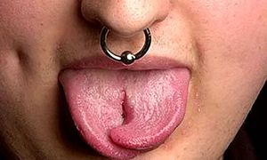

Anná
 De: La Frikipedia, la enciclopedia extremadamente seria.
De: La Frikipedia, la enciclopedia extremadamente seria.

El origen de todo, el gordo Juan.
 Lengua despues de un anná.
Anná es un ataque tocapelotas que consiste en la incisión bajo una barbilla ajena y su consecuente presión hacia arriba con la mano derecha. Duele bastante si no se toman precauciones, con la boca abierta o hablando hay riesgos de mordedura de lengua, rotura de incisivos o, incluso, picamiento ultra fuerte.
Nacimiento
Ciertas teorías conspiradoras apuntan a que su origen tiene raíces en un gordo llamado Juan que, harto de ser objeto de mofa, bufa y trufa, comenzó a pegar hostias en las barbillas de las gentes. En cuanto al nombre, se cuenta que fue otro gordo llamado Juanma quien se lo puso, porque le recordaba a lo que hacía la tortilla del colegio cuando se le daba con el tenedor en la punta. Anná proviene de annare, un nombre reducido y adaptado a las circunstancias, ya que no queda igual decir "anná!" que "annare!". Hoy en día hay quien sigue llamando "annare" o quien piensa que "anná" proviene de "Aznar", el presidente conservador que gobernó España 1996-2004.
Tiempo después, se descubrió gracias a un libro de texto de Lengua de 3º de E.S.O (que para eso sirven, para buscar imágenes que no pegen ná)una mujer en cuadro del XVIII acariciando la barbilla de un hombre (bastante feo).No, no se trata de un acariciamiento, se trata de...la mujer que inventó el anná!. Todavía se está investigando estos confusos hechos paradójicos.
Tipos de anná
Entre los diversos tipos de anná que existen, y ordenados según descubrimiento cronológico se encuentran:
- Anná Básico: El de toda la vida, rápido, sencillo y para toda la familia.
- Anná con truco: El anná que se da haciendo movimientos desconcertantes, o de improviso, un anná complejo, no a la altura de cualquier persona.
- Anná exprés: También conocido como "Onofre", porque al decir rápido su nombre puede confundirse con esta palabra. Su magia reside en que debe hacerse muy rápidamente, sin esperas y con previo acecho. Hay que retirar la mano corriendo, como si de la lengua de un camaleón se tratase.
- Anná galletero: Anná que se da con un paquete de galletas rancio. Su efecto no es muy grande pero jode que te den con galletas rancias.
- Anná evitado (Sí, sí): Cuando el atacado se cubre con la mano, o con una bufanda, o con cualquier útil cubridor, el anná que se le hace es cubierto. Por supuesto, este cubrimiento no sirve en absoluto. También puede ser evitado en el momento de la acción, siendo acompañado dicho movimiento de un QUIETO! o en su defecto de un QUITA!
- Anná estuchil: Anná que se da con un estuche
- Anná codil: Anná que se da con el codo.
- Anná doble: El que se recibe a dos bandas, anná con dos manos de diferentes personas
- Anná platol: Anná que se recibe con un plato. Su inventor fue Álvaro
- Existe también una variante en los anná, es el único caso en el que los annás no se deben, es decir, no se devuelven (te lo debo, te lo debo). Ese es el TO LIO DE MANOS: Consiste en formar un circulo estrecho entre cinco o seis para lanzar annás a diestro y siniestro. Los participantes no pueden cubrirse y suelen acabar con diferentes marcas de rozaduras y frocejeos, sobre todo en la barbilla
Autor(es):
- Nexo
- Aque
- Juanma
- RaFa!"$
- Kaori
- Thabita
- Cibercrank
- Milongas
Frikipedia 2005-2016, Licencia
GFDL 1.2 - Extraído por FrikiLeaks